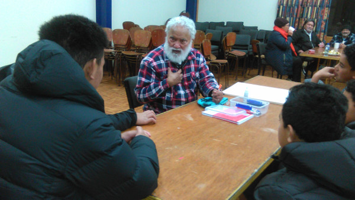

Profile for Atafu Tokelau Community Group Inc Soc website Mr Loimata Iupati is a founding member of the Atafu Tokelau Community Group Incorporated Society. In the early years of the Society he served as the assistant secretary to Mr Ioelu Ariu, and then as the secretary, after Mr Ariu passed away. Now as an elder member of the Society, Loi lends essential moral support, knowledge, and experience, to committee initiatives and Society activities. In the wider community, Loi was a senior administrator and educator. One of the first Tokelau New Zealand trained teachers’, he taught in Wellington region schools during early 1970s. He was also Director for the Wellington Multicultural Centre from 1989 to 1997, and also a Director of Education for Tokelau government from 2001 to 2007. While the Director for the Multicultural Centre, Loi received a New Zealand 1990 Commemoration Gold Medal. These were awarded to selected seniors of New Zealand government departments, as part of the celebration of the 150 th anniversary of the signing of the Treaty of Waitangi. During his final year at Teacher’s College, Loi completed the Outward Bound Leadership course. The experience reinforced Loi’s impetus to support Tokelau parents to encourage their children to work hard and to persevere to achieve their goals. During mid 1980s and early 1990s he established Tokelau study groups to support parents and help their children to achieve in School Certificate and University Entrance exams. The original group was in Auckland, while he was on Tokelau scholarship to the University of Auckland studying for his Bachelor’s degree, and then his Master of Arts (Hon) in Education. When he returned to Wellington, he established similar groups with Tokelau families in the Hutt Valley and Porirua. Loi has always been a strong advocate of maintaining the Tokelau language. He assisted Mr Ropati Simona on producing the Tokelau Dictionary. During his time at the Multicultural Centre, Loi edited numerous Tokelau publications for Learning Media and Lift Education, and also translated resources for various government departments. He was also an original proponent for the Tokelau Bible translation project movement that began in early 1990s. In 2004, he was awarded a gold medal by the Vatican for services to Tokelau Bible translation project. Loi is currently one of the main translators, working with Mr Ioane Teao, Mrs Matafele Pereira, and the New Zealand Bible Society. Loi continues to champion Tokelau, to Tokelau. With his characteristic humour, he tirelessly pushes our people to achieve their untapped potential, but to never forget our heritage and language.